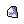
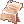
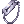
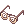
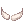

Template:AccessQuests
Jump to navigation
Jump to search
Miscellaneous Quest Lines and Access Quests
The following tables list several quests required to access certain fields, dungeons, instances, and daily quests.
Stand-alone Quests
| Quest | Locale | Type | Description |
|---|---|---|---|
| Wandering Guardian | New World, Mora | Daily quest | Required to begin Mora Daily Quests and earn Mora Coins. See Hazy Forest and Mora Enchants. |
| Eclage Entrance Quest | New World, Eclage | Daily quest | Required to begin Encounter in a Strange Land and Oliver Wolf Hood quest. |
| Encounter in a Strange Land | New World, Eclage | Daily quest | Required to begin Eclage Daily Quests and earn Splendide Coins. This quest and the Troublesome Fairies quest are required to begin Light & Darkness quest. |
| Finding the Moving Island | Moscovia | Field access | Enables access to Okrestnosti of Moscovia. |
| Thanatos Tower | Rune Midgard, Hugel Field | Dungeon access | Required to access Thanatos Tower 7F and higher. In NovaRO, you can access Thanatos Tower 1F - 6F without the quest and without a party. |
| Cautious Village | Port Malaya | Instance access | Required to start the pre-requisite quests to access Port Malaya instance dungeons. |
| Bakonawa Extermination | Port Malaya | Instance access | Required to access Bakonawa Lake. |
| Nurse in Port Malaya | Port Malaya | Instance access | Required to access Bangungot Hospital. |
| Secret in the Woods | Port Malaya | Instance access | Required to access Buwaya Cave. |
| Phantasmagorica | Eden HQ, Verus | Field, Dungeon, and Instance access + Daily quest | (Lv 140) Required to access Verus and its surrounding maps. Also required to access Central Laboratory and Last Room. |
| Fire Basin Quests | Dimensional Crack | Field and Instance access + Daily quest | (Lv 140) The Dimensional Travel quest is required to access Fire Basin and Bios Island. You need to be Lv 160 to access Bios Island. |
New World and Banquet for Heroes Quest Line
| Quest | Locale | Type | Description |
|---|---|---|---|
| Cat Hand Group's New World Access | Eden HQ, Midgard Camp | Field access | Required to start Ring of the Wise King quest, various quest lines in the New World, and to start Banquet for Heroes quests. |
| Room of Consciousness | Rune Midgard, Prontera | Field and instance access | Part of Banquet for Heroes quest line. Required to access Invaded Prontera, Room of Consciousness, and Sky Fortress. |
| Restricted Sector | Rune Midgard, Prontera | Dungeon access | (Lv 140) Part of Banquet for Heroes quest line. Required to access Prontera Dungeon, where you can do several Banquet for Heroes Daily Quests. |
| New Surroundings | New World, Midgard Camp | Field access | Complete this quest to be able to access Splendide fields and Manuk fields directly from Midgard Camp. Also required to start Report from the New World quest. |
| Finding a Fairy | New World, Eclage & Manuk | Etc. | (Lv 70) Required to begin Ring of the Wise King quest. |
| Ring of the Wise King | New World, Midgard Camp | Key item for various quests | The reward of this quest is |
| Sapha's Visit | New World, Midgard Camp, Manuk, and El Dicastes | Nightmare Scaraba Hole quest line | Required to begin Ultimate Spellbooks quest and Doha's Secret Orders. |
| Ultimate Spellbooks | New World, El Dicastes | Etc. | (Warlock Lv 140 only) Complete this quest to create Comet Spellbook and Tetra Vortex Spellbook. See also Reading Spell Book. |
| Doha's Secret Orders | New World, El Dicastes | Nightmare Scaraba Hole quest line | Complete until step 7 (after speaking with BK the cat outside El Dicastes). Required to access Nightmare Scaraba Hole (where the Gold Scarabas spawn). |
| Attitude to the New World | New World, Midgard Camp | Nidhoggur's Nest quest line | Complete this quest to start Report from the New World quest. |
| Tripatriate Union's Feud | New World, Midgard Camp | Nidhoggur's Nest quest line | Complete this quest to start Report from the New World quest. |
| Report from the New World | New World, Midgard Camp, Splendide & Manuk Fields | Nidhoggur's Nest quest line | Complete this quest to start Guardian of Yggdrasil quest. |
| Two Tribes | New World, Splendide, Nidhoggur Dungeon | Nidhoggur's Nest quest line | Start this quest and enter Nidhoggur Dungeon to start Guardian of Yggdrasil quest. |
| Guardian of Yggdrasil | New World, Nidhoggur Dungeon | Nidhoggur's Nest quest line | Start this quest to access Nidhoggur's Nest instance. |
Wolfchev's Laboratory Access Quests
| Quest | Description | Consumed Items | Non-Consumables Required |
|---|---|---|---|
| Factory Quest | Required to progress in the Einbroch Murder Quest and President Quest. |  10 Rusty Screw 10 Rusty Screw
|
N/A |
| Einbroch Murder | Required to progress in the President Quest. | N/A | N/A |
| Biolabs Entrance | Required to progress in the President Quest. |  20 Jellopy | N/A |
| President Quest | Required to start Dangerous Rumors quest.
Note that in NovaRO, the President is available for a longer duration. Ymir's Heart Piece is obtained during the quest from an NPC in Biolabs 2F. You only have to do this quest until you enter the Document Room in Rekenber Headquarters and search for Shinokas Case File (step 29). If you obtained the Shinokas Case File key item, proceed with the quest until you give away the key item to the President. Then proceed to Dangerous Rumours. |
 10 Research Chart
 10 Handcuffs |
 Geek Glasses
 Grandpa Beard |
| Dangerous Rumors | Required to enter Wolfchev's Laboratory. | N/A | N/A |